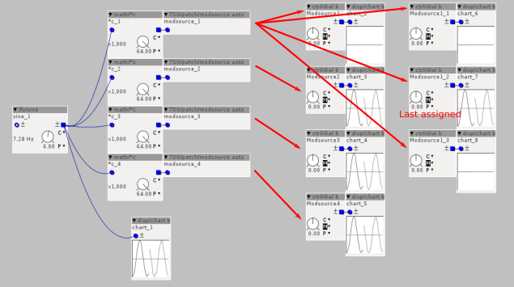

Hello,
I've been searching the forum for info about this problem I'm having and I've had no luck so far.
I recently discovered modsources and I love the idea (so far i've been using midi/intern/cc objects for that purpose).
The thing is I'm not being able to use one modsource to modulate more than one parameter. It seems it only modulates the last parameter I assigned, and ignores the rest.
I thought this would be because of having "Maximum number of modulation targets" in the patch settings to "1", but setting this to a higher number doesn't seem to work either.
Am I doing something wrong, or is it just the way it works and I should use one modsource object for each target?

Using modsources on more than one destination
TTotelka
#1
hitachii
#2
Forgive me if there's something I'm missing here, but how about just connecting several cables from the modsource that works to the other ones? It will save RAM too.
TTotelka
#3
Hi, thanks for your reply Hitachi.
The patch of the screencap I shared has no other purpose than showing the problem I'm having, but it is not what I need to get to work.
I'm precisely using modsources because I don't have the option to use wires.
Since the modsources I need to work on more than one destination are not a lot I'm thinking in those cases I will use a midi/intern/cc
Still, I would like to know if that is the normal behaviour or if I should be able to modulate more than one target with one modsource.
reubenfinger
#4
I'm afraid that I can't answer your question regarding whether that is normal behaviour for modsources but referring to this quote directly,
I wanted to link this incredibly useful post about adding inlets, which may solve your problem in another way, and opens up the wonderful world of modding objects, even if that means that like me this is all you ever really do:
TTotelka
#5
Hey thank you so much, I thought about adding inlets but I didn't really feel like going through the code of the objects. But you are right, that might be the better solution.